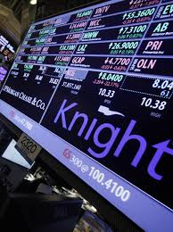

Root cause
The catastrophic $440 million loss incurred by Knight Capital Group was not the result of a single, isolated malfunction but rather a "perfect storm" of latent technical vulnerabilities and compounding procedural failures. The event's primary technical catalyst was the flawed execution of a software deployment, which inadvertently resurrected a dormant and dangerous piece of "dead code" on one of its live production servers. Knight was updating its core trading platform, the Smart Market Access Routing System (SMARS), to accommodate the NYSE's new Retail Liquidity Program (RLP). This deployment was a manual process, and during the rollout, a technician failed to copy the new software to one of the eight servers in the production cluster. This critical oversight created a hazardous divergence: seven servers were running the intended RLP code, while a single, overlooked server remained active with its outdated, pre-RLP codebase. The fatal mechanism was centered on a repurposed software flag. In the new RLP software, this flag was intended to activate the new retail trading logic. However, in the old codebase lingering on the failed server, this exact same flag was still mapped to a long-obsolete test algorithm from 2003 known as "Power Peg".
This dangerous piece of code, which had never been removed despite being unused for nearly a decade, was effectively a "time bomb" waiting for a trigger. As the market opened, RLP-designated orders began to arrive, setting the repurposed flag to "true." This correctly activated the RLP functionality on the seven updated servers, but on the one non-updated server, it reanimated the "Power Peg" algorithm, directing a stream of live parent orders to this defunct and destructive test function. The situation became catastrophic due to a separate, latent bug. A software refactor years earlier had disconnected the "Power Peg" algorithm from its "cumulative quantity" tracker—the very function designed to tell the algorithm when a parent order was complete and to stop sending new child orders. Because this critical "stop" mechanism was broken, the newly awakened algorithm entered an endless, unthrottled loop. For each parent order it received, it continuously fired thousands of child orders into the market, as it no longer had a way to recognize that the order had been filled. This chain reaction, initiated by a flawed manual deployment and compounded by poor code hygiene and the risky repurposing of a control flag, allowed a broken, decade-old test algorithm to run unchecked on a live system, executing millions of errant trades in just 45 minutes.
